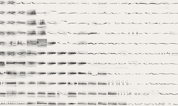

Visualización de Datos e información: Es una disciplina qué busca representar datos abstractos en formas perceptibles (imagen, sonido, etc) que permitan entender los datos. Para esto hace uso de estrategias visuales de diseño, conceptos de ciencias cognitivas y percepción.
"Birds"
Este proyecto muestra cómo la visualización puede ir más allá de lo puramente gráfico. Al convertir datos acústicos en representaciones visuales y sonoras, “Birds” permite explorar la biodiversidad de las aves desde una perspectiva sensorial y educativa. Es un ejemplo claro de cómo los datos abstractos (en este caso, ondas de sonido) pueden ser traducidos en formas perceptibles y atractivas mediante el diseño interactivo, el sonido y la IA.

AI Experiments
Built by Kyle McDonald, Manny Tan, Yotam Mann, and friends at Google Creative Lab. Thanks to Cornell Lab of Ornithology for their support. The sounds are available in the Macaulay Library’s Essential Set for North America. t-SNE animation featured in video by Gene Kogan.
Cornell Lab of Ornithology
We work with communities around the globe to inspire and inform conservation. Your support helps us find solutions for a sustainable planet alive with the beauty of birds—where humans and wildlife can thrive.
Machine learning is a method of data analysis that automates analytical model building. It is a branch of artificial intelligence (AI) & based on the idea that systems can learn from data, identify patterns and make decisions with minimal human intervention.
Bird sounds vary widely. This experiment uses machine learning to organize thousands of bird sounds. The computer wasn’t given tags or the birds’ names – only the audio. Using a technique called t-SNE, the computer created this map, where similar sounds are placed closer together. Built by Kyle McDonald, Manny Tan, Yotam Mann, and friends at Google Creative Lab.